#0 Raycast?
#1 Raycast 사용법
#1.1 Debug.DrawRay() 레이저 출력
#1.2 RaycastHit 충돌 정보
#1.3 Physics.Raycast 레이케스트 사용
#1.4 실행 결과
#2 LayerMask 특정 레이어만 인식
* 개인적인 유니티 공부 내용을 기록한 포스팅으로 잘못된 내용이 있을 수 있으며, 지속적으로 수정해 나갈 예정입니다.
#0 Raycast?
Raycast란, A의 위치에서 B의 방향으로 레이저를 발사하여 해당하는 위치에 사물이 존재하는 지 판별하는 기능입니다.
Raycast는 Physics 클래스 안에 정의 되어 있으며 Raycast를 사용하기 위해선, [1] 플레이어의 위치 / [2] 방향 / [3] RaycastHit (충돌 정보) / [4] 거리 정보가 필요합니다. 간단한 예제를 통해 Raycast의 사용방법에 대해서 알아 보도록 하겠습니다.
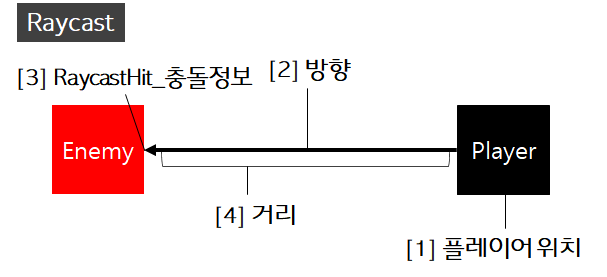
#1 Raycast 사용법
우선 테스트를 위해서 Player / Enemy 오브젝트와 , TestRay C#스크립트를 하나씩 생성해 줍니다. 그 후에 Player 오브젝트에 TestRay C# 스크립트를 부착해 줍니다. 다음으로 차근차근 TestRay C# 스크립트를 작성해 보도록 하겠습니다.
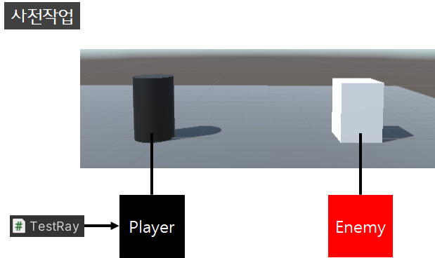
#1.1 Debug.DrawRay() 레이저 출력
Debug.DrawRay() 는 발사하는 레이저를 Scene 에서 볼 수 있도록 해주는 메서드입니다. 반드시 필요한 것은 아니지만 테스트를 위해서 선언해 주도록 하겠습니다.
사용 방법은 Debug.DrayRay( 플레이어 위치 , 방향 , 레이저 색 ) 으로, 최소 3가지 정보가 필요합니다.
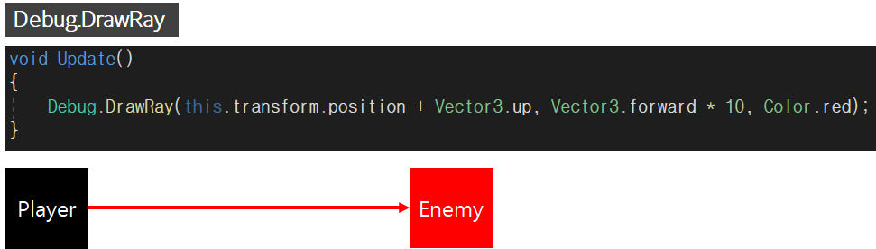 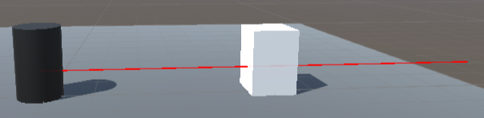
#1.2 RaycastHit 충돌 정보
다음으로 충돌할 정보를 저장할 변수인 RaycastHit 이 필요합니다. (2D의 경우 RaycastHit2D로 선언합니다.)
hitInfo에는 충돌한 오브젝트의 정보가 저장됩니다.
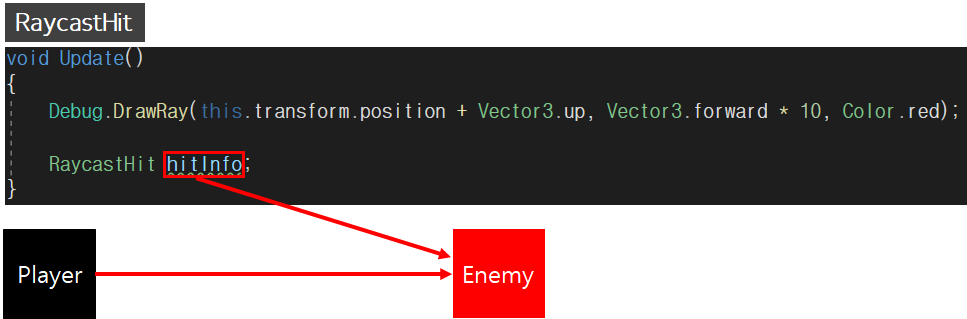
#1.3 Physics.Raycast 레이케스트 사용
마지막으로 Physics 클래스의 Raycast 멤버를 사용해 레이저를 구현 할 차례입니다. 보통은 Raycast 를 사용하기는 하는데, Linecast 등 다른 형태의 레이저를 쏠 수도 있습니다.
사용방법은 Physics.Raycast( [1]시작점 , [2]방향 , [3]충돌 정보, [4]거리 ) 로, [4]거리 를 생략할 경우 화면 끝까지 레이저가 무한대로 발사하게 됩니다.
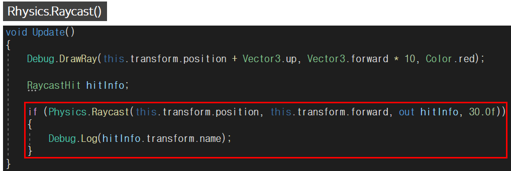
저는 레이저가 특정 물체를 감지한다면 Debug.Log() 함수로 충돌정보(hitInfo)를 출력하도록 구현 했습니다.
#1.4 실행 결과
아래와 같이 레이저가 Enemy 오브젝트와 충돌해서 충돌한 정보 (Enemy 이름) 를 콘솔창에 출력합니다.
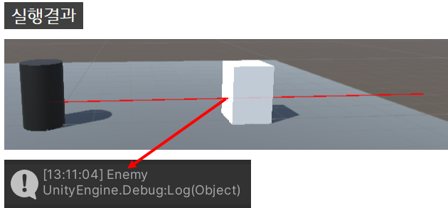
using System.Collections;
using System.Collections.Generic;
using UnityEngine;
public class Ray : MonoBehaviour
{
void Update()
{
Debug.DrawRay(this.transform.position + Vector3.up, Vector3.forward * 10, Color.red);
RaycastHit hitInfo;
if (Physics.Raycast(this.transform.position, this.transform.forward, out hitInfo, 30.0f))
{
Debug.Log(hitInfo.transform.name);
}
}
}#2 LayerMask 특정 레이어만 인식
LayerMask를 이용하면 특정 물체만 인식 하도록 설정이 가능합니다. 플레이어(Player)와 적(Enemy) 사이에 방해물 큐브 (Cube) 를 생성하고 실행해 보도록 하겠습니다.
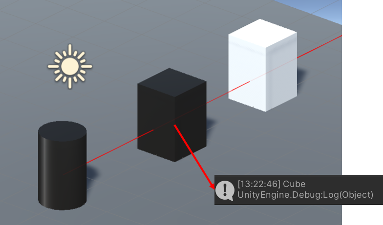
위와 같이 큐브에 가로막혀서 플레이어가 적을 인식하지 못합니다. 여기서 LayerMask를 이용하면 큐브를 무시하고 적만 인식 하도록 구현할 수 있습니다.
LayerMask 변수를 선언해 준 뒤, Physics.Rayscast의 5번째 인자로 선언한 layermask를 넣어 줍니다. layermask에는 감지 할 특정 레이어의 정보가 저장됩니다.
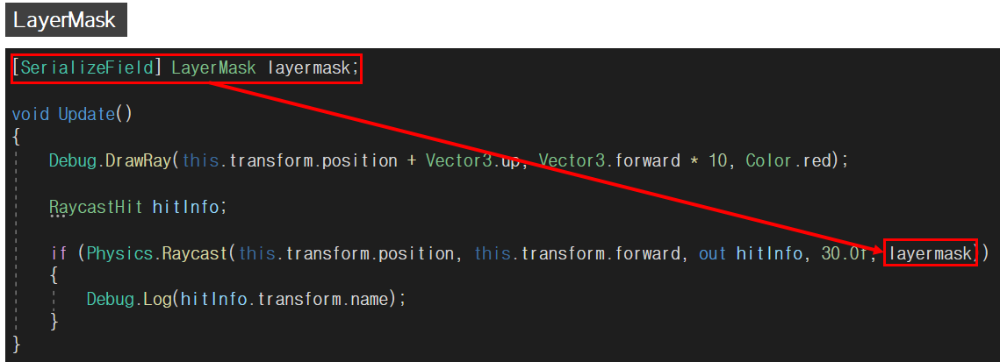
그리고, 플레이어 오브젝트를 클릭한 후 Layer -> Add Layer... 로 Layer Inspector 창을 켠 뒤 8,9,10 번 레이어에 Player, Cube , Enemy 레이어를 추가해 줍니다.
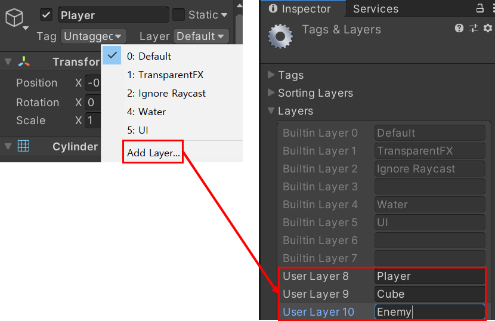
만든 8,9,10번 레이어를 이름에 맞게 오브젝트에 적용해 준 뒤 플레이어 오브젝트의 Test Ray 스크립트의 Layermask 항목에 감지할 레이어 (Enemy) 를 부착해 줍니다.
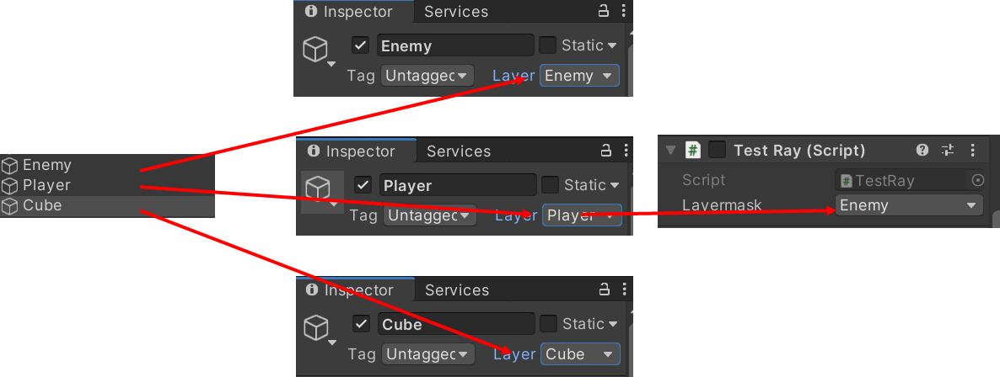
이제 실행 해보면 큐브(Cube)를 무시하고 적(Enemy)의 정보를 콘솔에 출력합니다.
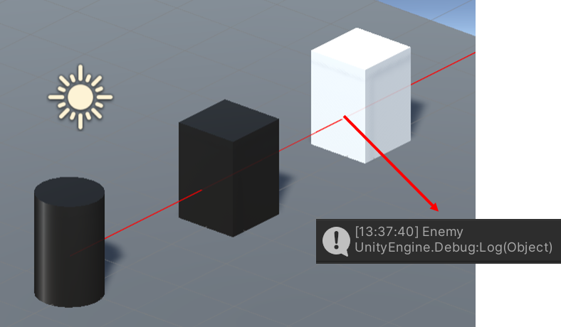
using System.Collections;
using System.Collections.Generic;
using UnityEngine;
public class Ray : MonoBehaviour
{
[SerializeField] LayerMask layermask;
void Update()
{
Debug.DrawRay(this.transform.position + Vector3.up, Vector3.forward * 10, Color.red);
RaycastHit hitInfo;
if (Physics.Raycast(this.transform.position, this.transform.forward, out hitInfo, 30.0f, layermask))
{
Debug.Log(hitInfo.transform.name);
}
}
}